1. 프로그램 소개
안녕하세요. Genius Novel(지니어스 노블)은 소설과 웹소설을 쓰는 작가를 위한 집필 프로그램입니다. 인물과 줄거리를 정리하고, 글을 쓰고, AI의 도움을 받고, 완성한 원고를 전자책 파일과 연재용 원고로 내보내는 일까지 한 프로그램에서 할 수 있습니다.
화면 위쪽의 여섯 개 방(기획실, 집필실, 자료실, 편집실, 출판실, 설정)이 작업 순서를 그대로 보여 줍니다. 목차를 눌러 필요한 부분부터 바로 보셔도 됩니다.
- 기획실 — 등장인물, 플롯 트리, 세계관, 연표를 정리합니다.
- 집필실 — 원고를 쓰고, 서식과 AI 도구를 사용합니다.
- 자료실 — 설정집(관계도, 세계관, 규칙, 용어 등)과 일관성 검사, 작가 노트를 관리합니다.
- 편집실 — 클리셰, 독자 반응, 문체, 맞춤법을 점검합니다.
- 출판실 — 전자책(EPUB·PDF) 파일과 등록정보를 만들고, 웹소설 연재용 원고를 내보냅니다.
- 설정 — AI 프로바이더와 API 키, 글꼴, 테마, 단축키를 설정합니다.
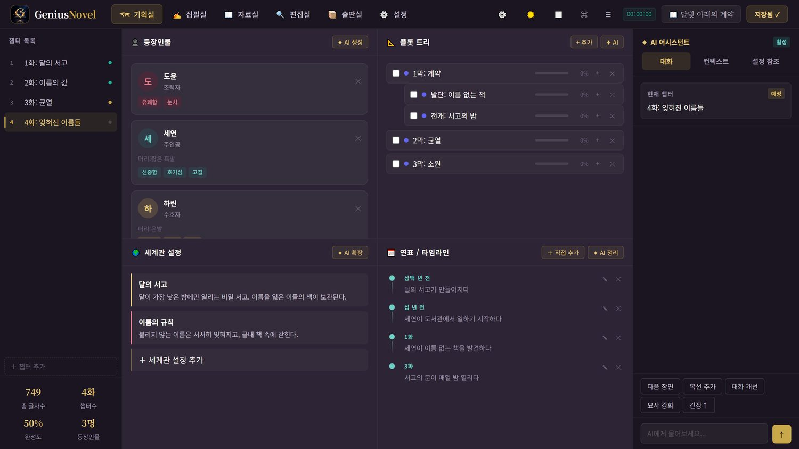
이 설명서의 화면은 프로그램의 예시 작품(가상의 인물과 사건)으로 찍은 것입니다. 사용하시는 컴퓨터에서는 본인의 작품이 표시됩니다.
2. 설치와 라이선스
2-1 프로그램 설치
설치 파일(GeniusNovel-Setup)을 실행하면 설치 마법사가 열립니다. 설치 위치는 기본값 그대로 두어도 되고, 다음을 눌러 진행하면 됩니다. 설치가 끝나면 바탕화면의 Genius Novel 아이콘으로 실행합니다.
2-2 라이선스 인증
처음 실행하면 라이선스 창이 열립니다. 구매하신 라이선스 키를 입력하고 활성화를 누르면 인증이 끝나고, 이후에는 자동으로 인증 상태가 유지됩니다. 라이선스 키 하나는 컴퓨터 한 대에 연결됩니다.
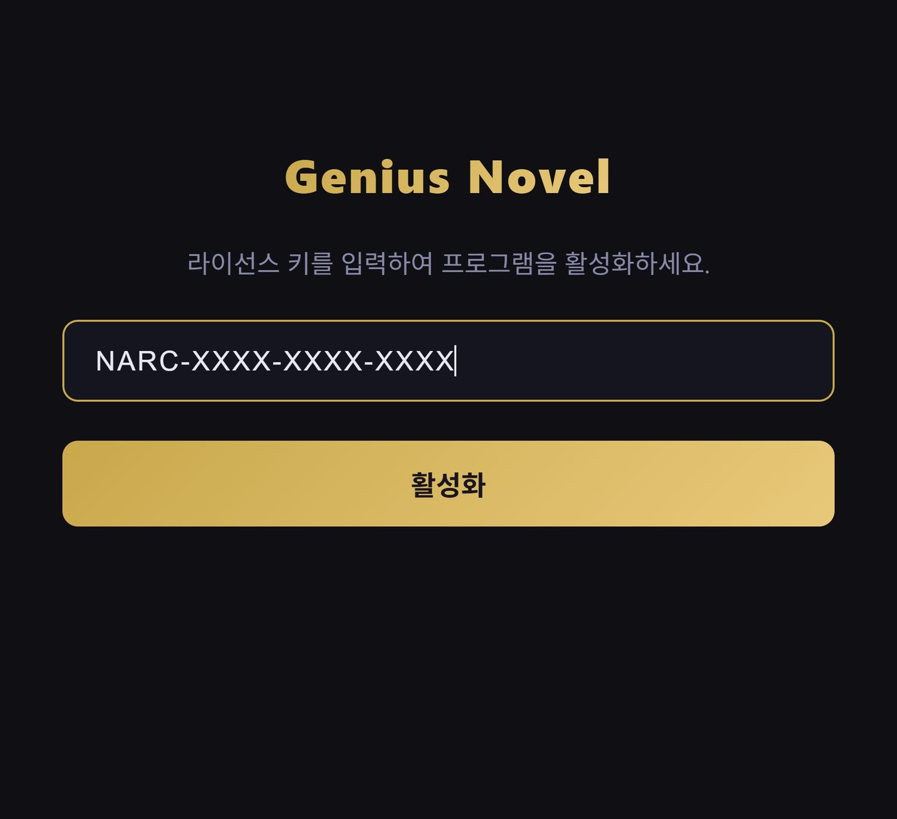
2-3 업데이트
새 버전이 나오면 프로그램이 업데이트를 안내합니다. 설정 화면의 업데이트 확인 단추로 직접 확인할 수도 있습니다.
2-4 기기 초기화 (컴퓨터를 바꿀 때)
다른 컴퓨터로 옮길 때는 설정 화면 아래쪽의 기기 초기화를 누르세요. 현재 컴퓨터의 등록이 해제되어, 새 컴퓨터에서 같은 라이선스 키를 다시 입력해 사용할 수 있습니다. 확인을 누르면 프로그램이 종료됩니다.
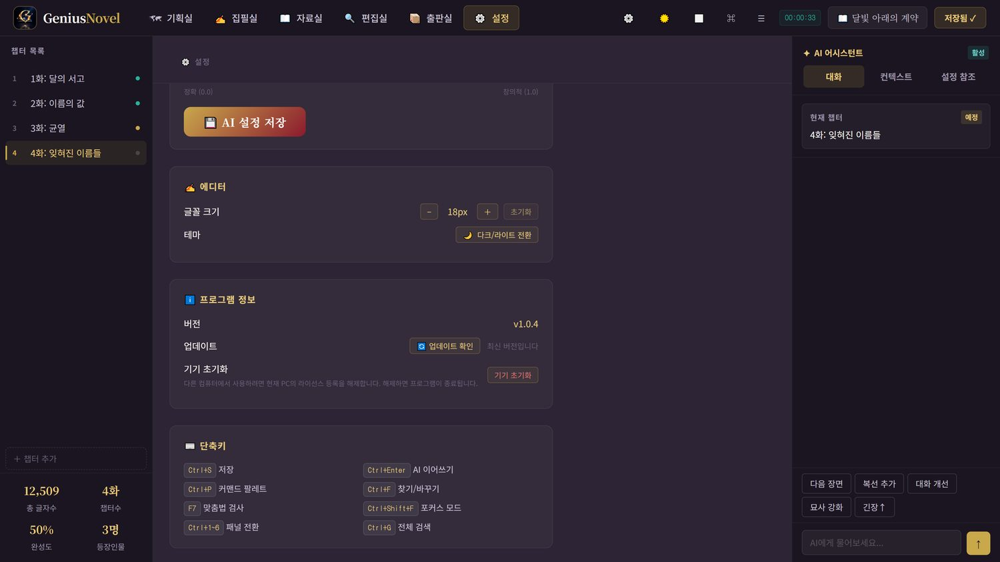
3. AI 설정과 API 키
Genius Novel의 AI 기능(AI 어시스턴트, 이어쓰기, 다시쓰기, 일관성 검사, 편집실 분석 등)은 OpenAI 또는 Groq 중 하나의 API 키로 동작합니다. 두 서비스 모두 이 프로그램과 별개의 외부 서비스이며, 키는 본인이 직접 발급받아 설정 화면에 입력합니다.
| 구분 | OpenAI | Groq |
|---|---|---|
| 요금 | 사용한 만큼 차감되는 선결제(충전) 방식의 유료 서비스 | 가입과 키 발급이 간단하고, 무료 사용 한도 안에서 사용할 수 있습니다 (한도와 정책은 서비스 사정에 따라 바뀔 수 있습니다) |
| 프로그램에서 하는 일 | 글쓰기 AI(모델: GPT-6.1 Sol 등), AI 표지 그림 생성 | 글쓰기 AI(모델: GPT-OSS 120B, Qwen3.8 27B, GPT-OSS 20B) |
| 키 발급 주소 | platform.openai.com | console.groq.com |
AI 표지 그림은 AI 프로바이더를 Groq으로 쓰더라도 OpenAI 키가 있어야 만들 수 있습니다. OpenAI 키가 없어도 표지는 "글자·스타일 다시 합성"으로 글자만 있는 표지를 만들 수 있고, 내가 만든 표지를 업로드할 수도 있습니다.
키는 프로바이더별로 따로 저장됩니다. 프로바이더를 OpenAI로 고르고 OpenAI 키를 저장하고, 다시 Groq으로 바꿔 Groq 키를 저장해 두면, 이후에는 프로바이더만 바꿔도 해당 키가 사용됩니다.
3-1 OpenAI API 키 발급받기 (유료·선결제)
OpenAI API는 사용한 만큼 요금이 차감되는 선결제(충전) 방식의 유료 서비스입니다. OpenAI 사이트에서 직접 결제하셔야 하며, 결제는 이 프로그램과 무관한 별도의 거래입니다.
먼저 구글에서 open ai platform을 검색합니다. 검색창에 입력하면 관련 검색어가 나타납니다.

검색 결과 맨 위의 OpenAI Platform이 API를 관리하는 공식 개발자 사이트입니다. 주소가 platform.openai.com인 것을 확인하고 접속하세요. 비슷한 이름의 가짜 사이트에 주의하시고, 반드시 주소를 확인하세요.

로그인 화면입니다. 이메일 주소를 입력하고 Continue를 누르거나, 구글·애플·마이크로소프트 계정, 또는 전화번호로 계속할 수 있습니다. 이미 OpenAI 계정이 있다면 그 계정으로 로그인하세요.

로그인하면 홈 화면이 열립니다. 왼쪽 메뉴에서 API Keys를 누르면 키를 관리하는 화면으로 갑니다. 왼쪽 위에는 현재 프로젝트 이름이 보이는데, 처음에는 Default project를 그대로 쓰시면 됩니다. 아래쪽에서는 크레딧 잔액과 이번 달 사용량도 확인할 수 있습니다. (이 설명서의 화면에서는 개인 금액을 가려 두었습니다.)

API keys 화면입니다. 지금까지 만든 키가 이름, 상태, 만든 날짜, 만료일, 마지막 사용일과 함께 목록으로 나옵니다. 상태가 Active이면 사용 중인 키이고, Revoked는 폐기된 키입니다.

오른쪽 위의 Create new secret key 버튼을 누르면 새 키를 만들 수 있습니다. 목록 오른쪽의 연필 아이콘과 휴지통 아이콘으로 수정과 삭제를 할 수 있습니다.

키 생성 창이 열립니다. Owned by에서는 You를 그대로 두면 됩니다. Name 칸에는 알아보기 쉬운 이름을 적으세요(예: auto key). Project는 기본 프로젝트를 그대로 둡니다. 만료는 1일, 7일, 30일, 만료 안 함, 사용자 지정 중에서 고를 수 있습니다.

만료 안 함을 고르면 이 키는 만료되지 않는다고 표시되고, 아래에 붉은 안내가 나옵니다. 수명이 긴 키는 유출될 경우 보안 위험이 있으니 키를 공유하거나 공개된 곳에 저장하지 말라는 내용입니다. 프로그램을 계속 쓰기에는 만료 안 함이 편하지만, 만료 기간을 정했다면 만료일 전에 새 키로 바꿔 주셔야 합니다. Permissions는 기본값 All을 그대로 두고, Create secret key를 누릅니다.

키가 만들어졌습니다. 창에는 이 키를 다시 볼 수 없으니 안전한 곳에 저장하라는 안내가 있습니다. Copy 버튼을 눌러 복사한 다음, 메모장 같은 곳에 바로 붙여 넣어 따로 저장해 두세요. 잃어버리면 새 키를 만들어야 합니다. 복사를 마쳤으면 Done을 누릅니다. (설명서 화면의 키는 예시 값입니다.)

키는 비밀번호와 같습니다. 다른 사람에게 보여 주거나 영상·캡처·공개된 곳에 올리지 마세요. 노출됐다면 바로 삭제하고 새로 만드세요.
3-1-1 크레딧 충전하기
이제 크레딧 충전입니다. 설정 메뉴에서 Billing으로 들어가면 Pay as you go, 즉 쓴 만큼 내는 방식의 화면이 열립니다. 위쪽에 현재 크레딧 잔액이 나옵니다. 잔액이 0달러가 되면 API 요청이 멈춘다고 안내되어 있으니, 잔액이 떨어지지 않게 확인해 주세요. 크레딧을 사려면 Buy credits 버튼을 누릅니다.

Auto-reload는 처음에 꺼져 있습니다. 켜 두면 잔액이 부족해질 때 자동으로 충전하고, 꺼 두면 잔액이 0달러가 될 때 요청이 멈춥니다. 아래에는 결제 수단, 결제 내역, 사용 한도, 요금표 항목이 있습니다. 특히 Usage limits에서는 월 지출 한도를 설정할 수 있으니 걸어 두시길 권합니다. 예상하지 못한 결제를 피하려면 자동 충전은 처음에는 꺼 두고, 필요할 때만 켜세요.
Buy credits를 누르면 충전 금액을 입력하는 창이 열립니다. 5달러에서 496달러 사이의 금액을 입력할 수 있습니다. 처음에는 가장 작은 5달러로 시험해 보시길 권합니다. 아래에서 결제 수단을 고르고 Continue를 누르면 다음 단계로 넘어갑니다. 등록된 카드가 없다면 Add payment method를 누릅니다.

결제 수단 추가 창에서는 카드 번호, 만료 날짜, 보안 코드를 입력합니다. 마스터카드, 비자, 아메리칸 익스프레스, 유니온페이 카드가 지원되는 것으로 표시됩니다. 입력한 카드는 계정에 저장되며 언제든지 삭제할 수 있다고 안내합니다. 카드 정보는 개인 정보이므로 직접 입력해 결제를 진행하세요.

3-2 Groq API 키 발급받기 (무료 한도)
Groq는 가입과 키 발급이 간단하고, 무료 사용 한도 안에서 쓸 수 있는 AI 서비스입니다. 아래 순서대로 키를 발급받으세요.
먼저 구글에서 groq를 검색합니다. 검색창에 입력하면 아래에 관련 검색어가 나타납니다.

검색 결과 맨 위에 있는 주소가 groq.com, 공식 사이트입니다. 비슷한 이름의 가짜 사이트도 있으니, 주소가 정확히 groq.com인지 꼭 확인하세요.

사이트에 들어가면 오른쪽 위에 주황색 START BUILDING 버튼이 있습니다. 누릅니다.

로그인 화면입니다. 구글 계정, 깃허브 계정, 이메일 중에서 편한 방법을 고르면 됩니다. 처음이라면 이 화면에서 계정이 새로 만들어집니다. 보통은 구글 계정으로 계속하기가 가장 간편합니다.

로그인하면 대시보드가 열립니다. 업그레이드 버튼 아래에는 오늘 청구되는 금액이 없고 사용한 만큼 내는 종량제라는 안내가 있습니다. 키를 만들려면 오른쪽 위의 API Keys 메뉴를 누릅니다.

API Keys 화면입니다. 지금까지 만든 키가 이름, 만든 날짜, 마지막 사용일, 만료일, 24시간 사용량과 함께 표시됩니다. 새 키를 만들려면 오른쪽 위의 Create API Key 버튼을 누릅니다.

키 만들기 창이 열립니다. 위쪽의 표시 이름(Display Name)은 나중에 구분하기 위한 이름이고, 아래에서는 키의 만료 기간을 정합니다. 만료 없음이 기본이고, 7일, 30일, 60일, 90일, 또는 직접 날짜를 정하는 Custom 중에서 고를 수 있습니다.

표시 이름에는 알아보기 쉬운 이름을 적으세요(예: auto key). 만료일을 직접 정하려면 Custom을 고르고 날짜를 선택합니다. 만료일이 지나면 키는 더 이상 쓸 수 없으니, 정해 두셨다면 그 전에 새 키로 바꿔 주셔야 합니다. 만료 없음을 고르면 그런 걱정은 없습니다.

이름과 만료 기간을 정했다면 오른쪽 아래의 Submit 버튼을 누릅니다.

키가 만들어졌습니다. 이 창에서만 키 전체를 볼 수 있습니다. 창에도 "지금 복사하세요, 다시 표시되지 않습니다"라는 안내가 있습니다. Copy 버튼을 눌러 복사한 다음, 메모장 같은 곳에 바로 붙여 넣어 따로 저장해 두세요. (설명서 화면의 키는 예시 값입니다.)

키를 잃어버렸다면 다시 볼 수 없습니다. API Keys 목록에서 휴지통 아이콘으로 그 키를 삭제하고, 새로 만들면 됩니다. 키가 다른 사람에게 노출됐다고 의심될 때도 같은 방법으로 삭제하세요.
3-3 프로그램에 키 입력하기
발급받은 키는 프로그램의 설정 방에서 입력합니다. 화면 오른쪽 위의 톱니바퀴(AI 설정) 단추로도 바로 갈 수 있습니다.
- 프로바이더에서 OpenAI 또는 Groq을 고릅니다.
- 모델을 고릅니다. OpenAI는 GPT-6.1 Sol(균형·추천), GPT-6 Astra(최고 성능), GPT-6 Luna(저비용·고속)이고, Groq은 GPT-OSS 120B(고품질·추천), Qwen3.8 27B(한국어 우수·짧은 요청용), GPT-OSS 20B(빠름·저비용)입니다.
- API Key 칸에 복사한 키를 붙여 넣습니다.
- 창의성(Temperature)을 정합니다. 낮을수록 안정적이고 높을수록 다양한 표현이 나옵니다.
- AI 설정 저장을 누르면 적용됩니다. 한 번 저장하면 계속 보관되어 다시 입력할 필요가 없습니다.
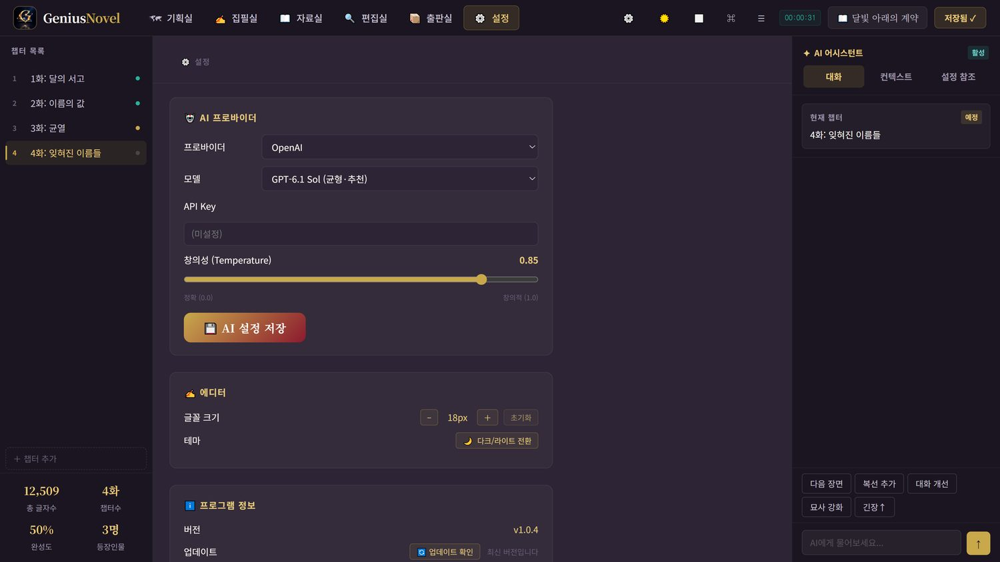
키를 저장한 뒤에는 입력 칸에 키가 보이지 않고 점으로 표시됩니다. 이것은 정상입니다. 프로바이더를 바꿀 때는 그 프로바이더의 키를 한 번 저장해 두세요.
4. 화면 구성
화면은 크게 네 부분으로 나뉩니다. 맨 위에는 여섯 개의 방으로 이동하는 메뉴가 있고, 왼쪽에는 챕터 목록과 글자 수, 챕터 수, 완성도, 등장인물 수 요약이 있습니다. 오른쪽에는 AI 어시스턴트 패널이 있고, 가운데는 방마다 달라지는 작업 영역입니다.
화면 오른쪽 위에는 작은 단추들이 있습니다. 왼쪽부터 AI 설정, 테마 전환, 포커스 모드, 커맨드 팔레트, 챕터 내비게이션, 그리고 집필 시간 타이머, 현재 작품 이름, 저장 상태입니다. 하나씩 뒤에서 자세히 설명합니다.
5. 새 작품 만들기와 불러오기
화면 위쪽의 작품 이름을 누르면 프로젝트 선택 창이 열립니다. 이미 만든 작품은 위쪽 목록에서 고르고, 새 작품은 아래에서 만듭니다. 작품 제목과 작가명을 쓰고 장르를 고른 뒤 새 프로젝트 만들기를 누르면 됩니다.
예를 들어 제목에 "별이 지는 도서관", 작가명에 필명을 적고 장르를 로맨스로 바꾼 뒤 만들기를 누르면 새 작품이 열립니다.
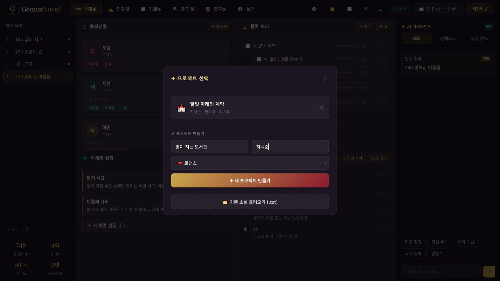
작품 목록 오른쪽의 ✕ 단추로 작품을 삭제할 수 있습니다. 삭제하면 그 작품의 챕터와 설정도 함께 지워지니 주의하세요.
5-1 기존 소설(TXT) 불러오기
이미 써 둔 소설이 있다면 기존 소설 불러오기(.txt)로 텍스트 파일을 가져올 수 있습니다. 파일을 고르면 미리보기 창이 열립니다. 프로그램이 "제1화", "제2화" 같은 제목을 찾아 화 단위로 나누고, 감지된 화 수와 글자 수를 보여 줍니다. 제목과 작가명을 확인하고 불러오기 확인을 누르면 화마다 챕터가 만들어집니다. 메모장 기본 형식(ANSI)으로 저장한 파일도 한글이 깨지지 않게 자동으로 판별합니다.
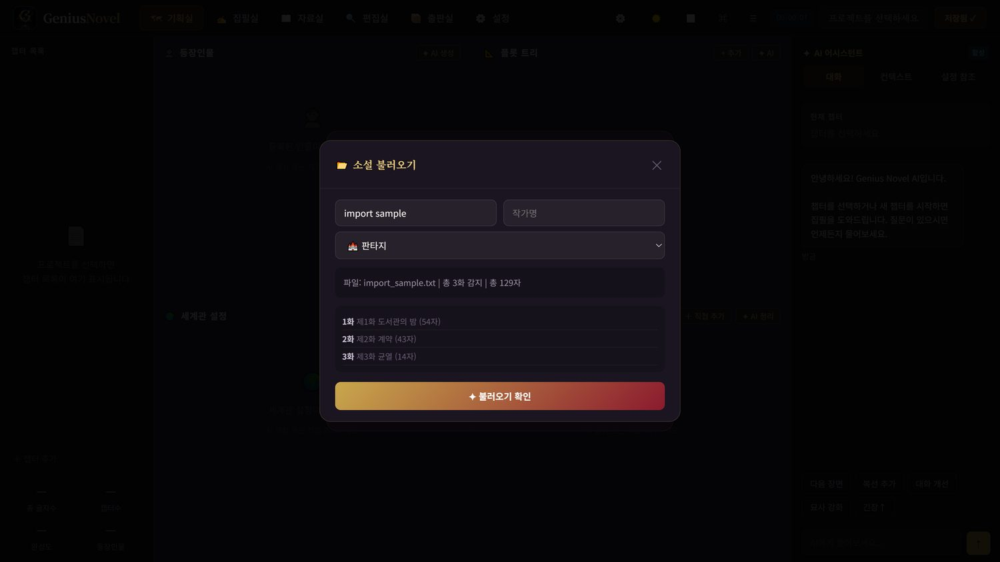
6. 집필실
집필실로 들어가면 가운데가 원고 편집기입니다. 왼쪽 목록에서 챕터를 누르면 그 화가 열리고, 편집기 위쪽 칸에서 챕터 제목을 바로 고칠 수 있습니다. 편집기 위의 도구 줄에는 되돌리기, 서식, 장면 전환, 이어쓰기 같은 단추가 있고, 오른쪽에는 이 챕터의 글자 수와 화당 권장 분량이 표시됩니다.
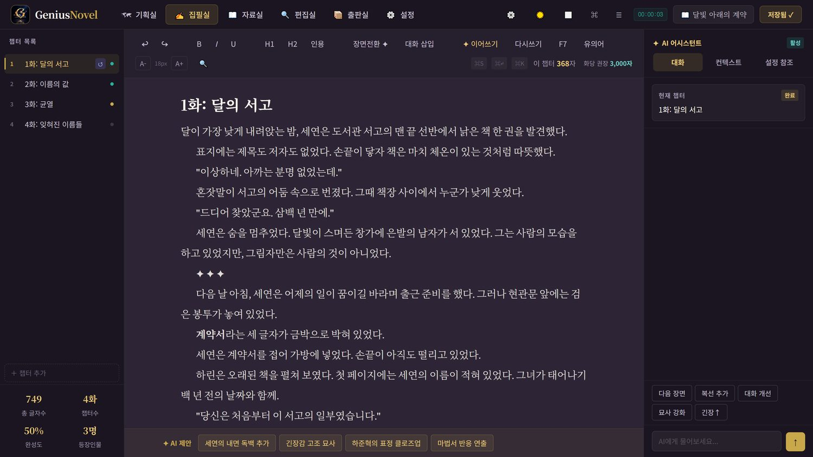
6-1 챕터 추가와 자동 저장
새 챕터는 왼쪽 아래의 챕터 추가를 누르면 만들어집니다. 제목은 나중에 자유롭게 바꿀 수 있습니다.
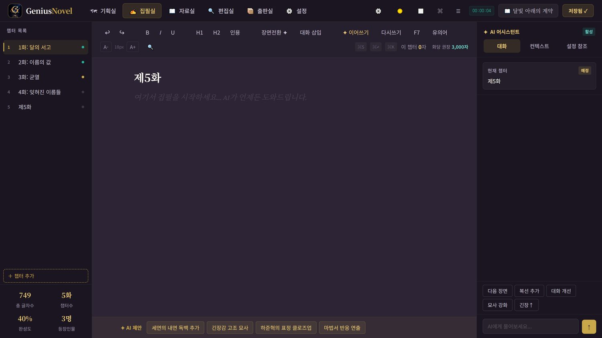
글을 쓰면 약 1초 반 뒤에 자동으로 저장되고, 저장 중일 때는 오른쪽 위 단추에 "저장 중..."이라고 나옵니다. 저장이 끝나면 "저장됨"으로 바뀌고 왼쪽의 글자 수도 함께 갱신됩니다. 챕터를 옮기거나 창을 닫을 때도 쓰던 글은 먼저 저장됩니다.
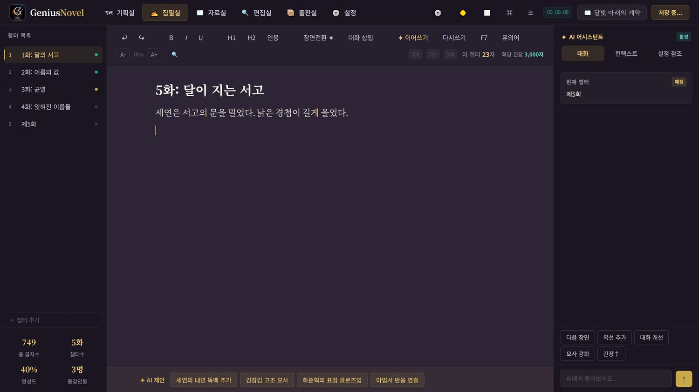
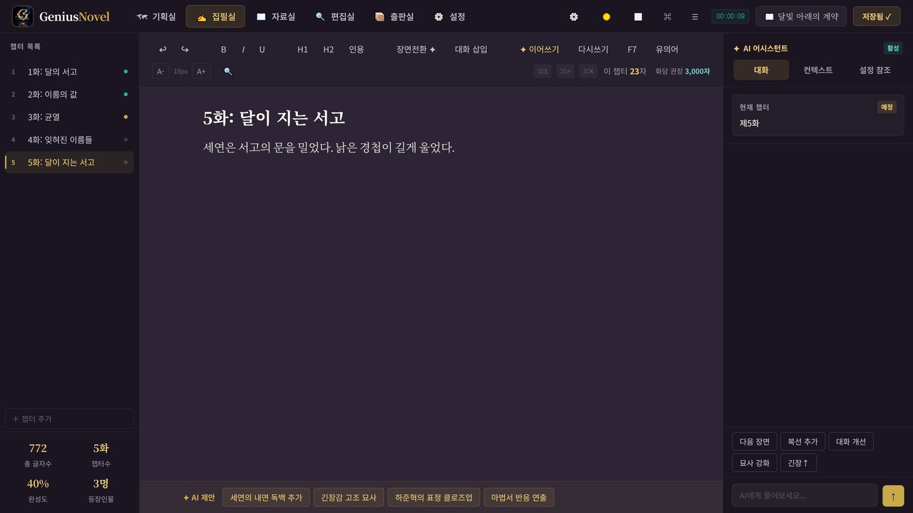
6-2 서식
서식은 도구 줄에서 고릅니다. 굵게, 기울임, 밑줄은 글자를 선택하거나 켜 둔 채로 쓰면 되고, H1·H2는 제목 줄, 인용은 인용문 줄이 됩니다. 장면전환 ✦을 누르면 별 세 개 구분선이 들어가고, 대화 삽입은 대사용 따옴표를 넣어 줍니다. 이 서식은 저장되고, 전자책과 워드 파일을 만들 때도 그대로 반영됩니다.
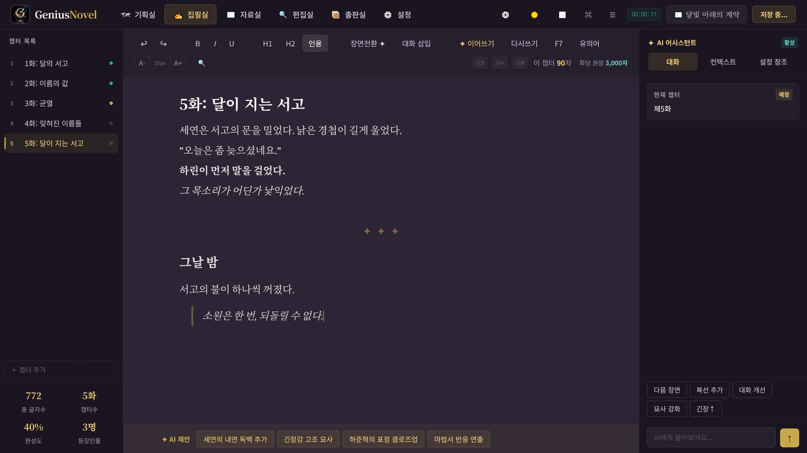
6-3 챕터 진행 상태
챕터 번호 옆의 작은 점은 진행 상태입니다. 점을 누를 때마다 예정, 집필 중, 검토, 완료 순서로 바뀌고, 이 상태는 완성도와 출판실의 플롯보드에 반영됩니다.
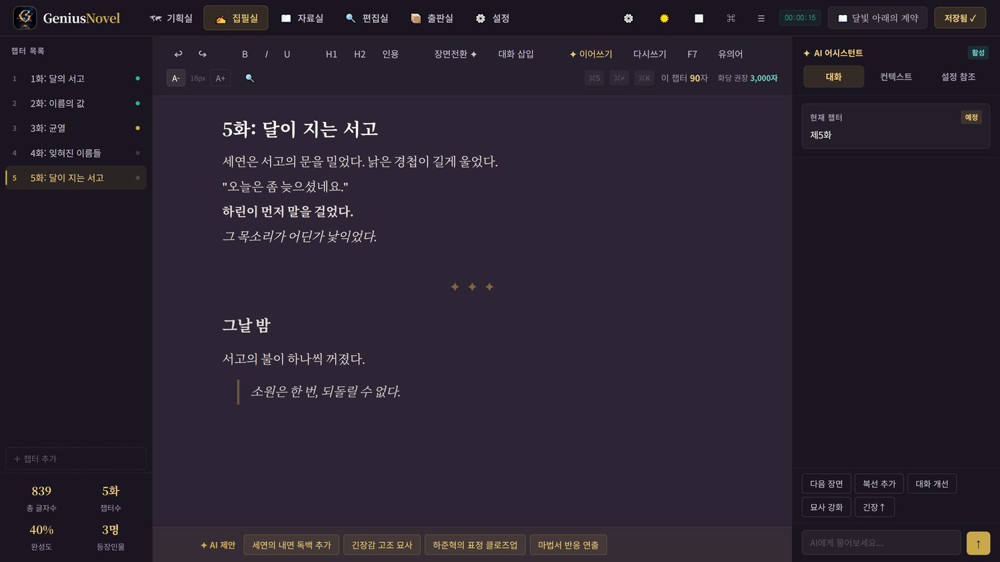
7. 집필 도구
7-1 찾기·바꾸기와 글자 크기
Ctrl+F로 찾기 바를 엽니다. 단어를 입력하면 본문에서 일치하는 곳이 강조되고, 몇 번째인지 숫자로 보여 줍니다. 바꾸기 칸에 새 단어를 적고 교체를 누르면 바꿀 수 있습니다.
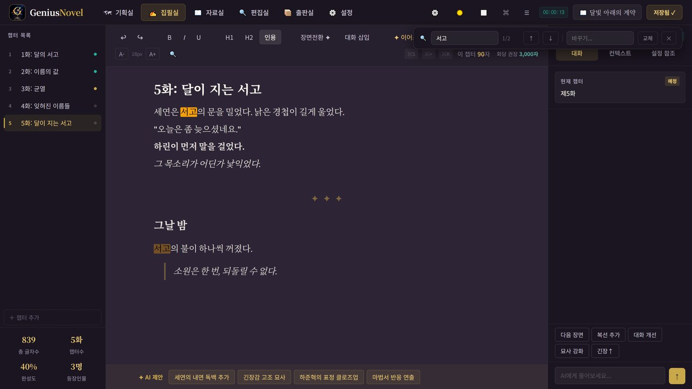
글자가 작거나 크면 도구 줄의 A-, A+로 크기를 조절합니다.
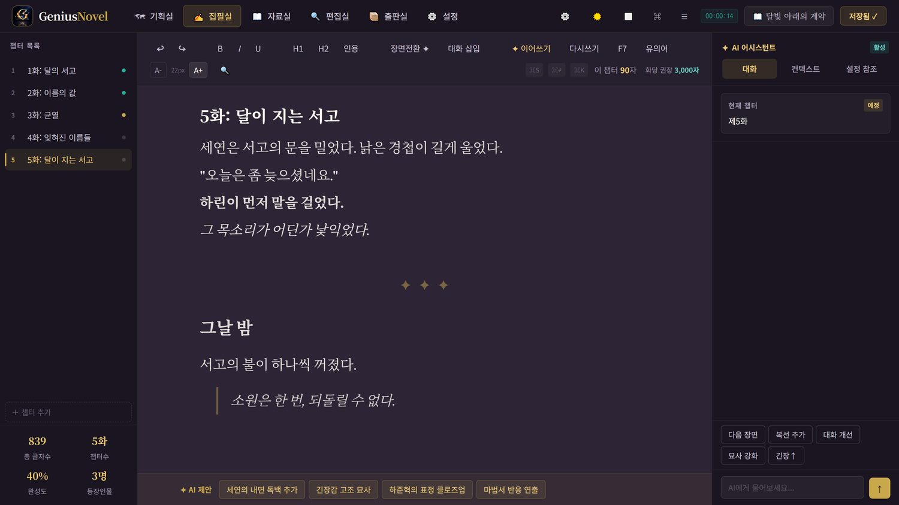
7-2 커맨드 팔레트와 챕터 내비게이션
Ctrl+P는 커맨드 팔레트입니다. 원하는 기능의 이름을 입력해 방 이동, 저장, 이어쓰기 같은 명령을 키보드만으로 실행합니다.
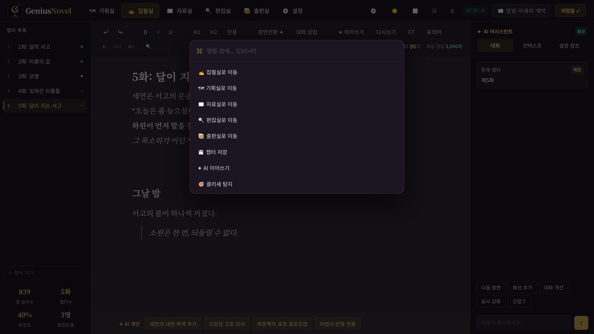
상단의 목록 단추는 챕터 내비게이션으로, 모든 챕터와 글자 수가 한눈에 보이고 누르면 바로 이동합니다.
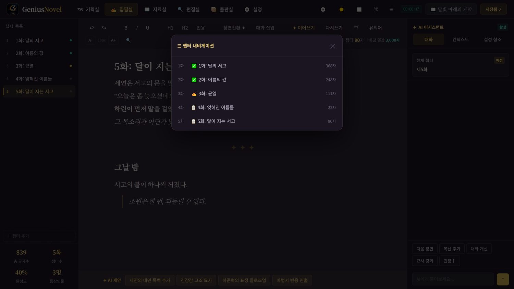
7-3 전체 검색
Ctrl+G는 전체 검색입니다. 모든 챕터와 설정에서 단어를 찾아 앞뒤 문맥과 함께 보여 줍니다. 등장인물 이름이 어느 화에 나왔는지 확인할 때 유용합니다.
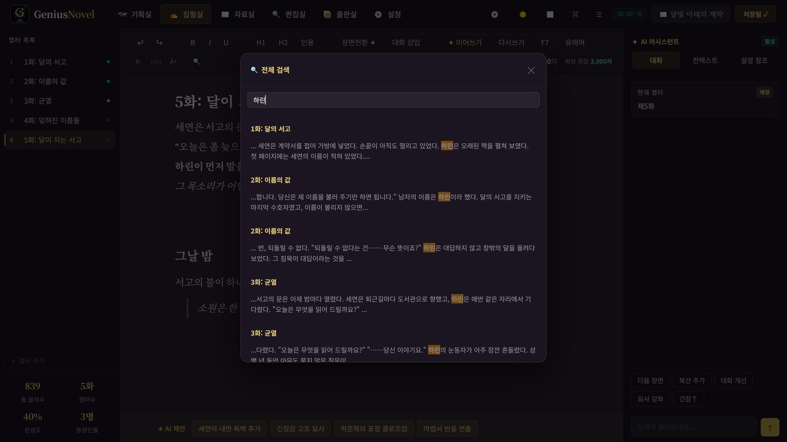
7-4 포커스 모드와 테마
포커스 모드는 Ctrl+Shift+F로 켭니다. 메뉴와 패널이 사라지고 원고만 남아 집중해서 쓸 수 있고, Esc를 누르면 돌아옵니다.
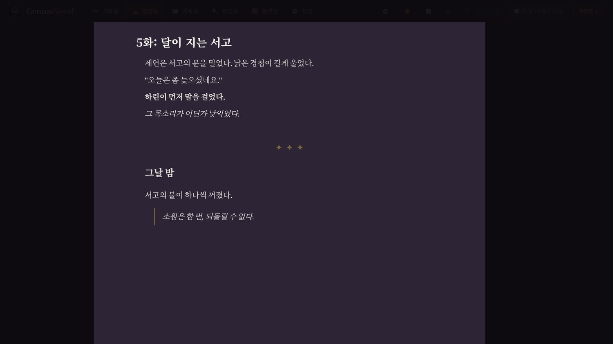
테마 단추를 누르면 밝은 화면으로 바뀝니다. 밤에는 어두운 화면, 낮에는 밝은 화면을 쓰면 편합니다.
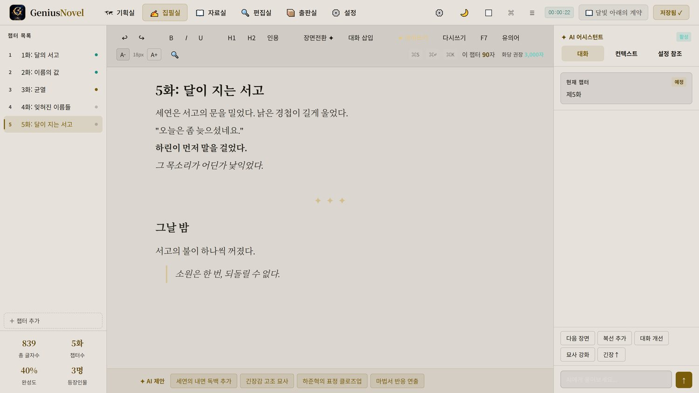
8. AI 어시스턴트
AI 기능을 쓰려면 먼저 3장에서 API 키를 입력해야 합니다. 키가 없으면 AI를 호출하는 기능은 동작하지 않습니다.
8-1 대화
오른쪽 패널의 대화 탭에서 AI에게 직접 물을 수 있습니다. AI는 지금 열린 챕터와 자료실에 적어 둔 설정, 그리고 목표 설정에서 정한 시점·문체·금지 표현을 참고해 답합니다. 패널에는 대화, 컨텍스트, 설정 참조 세 개의 탭이 있습니다.
질문을 입력하고 Enter를 누르면 답이 나옵니다. 예를 들어 "하린의 과거를 암시하는 장면을 어떻게 넣으면 좋을까?"라고 물으면 구체적인 방법을 목록으로 알려 줍니다. 줄을 바꾸려면 Shift+Enter를 누릅니다.
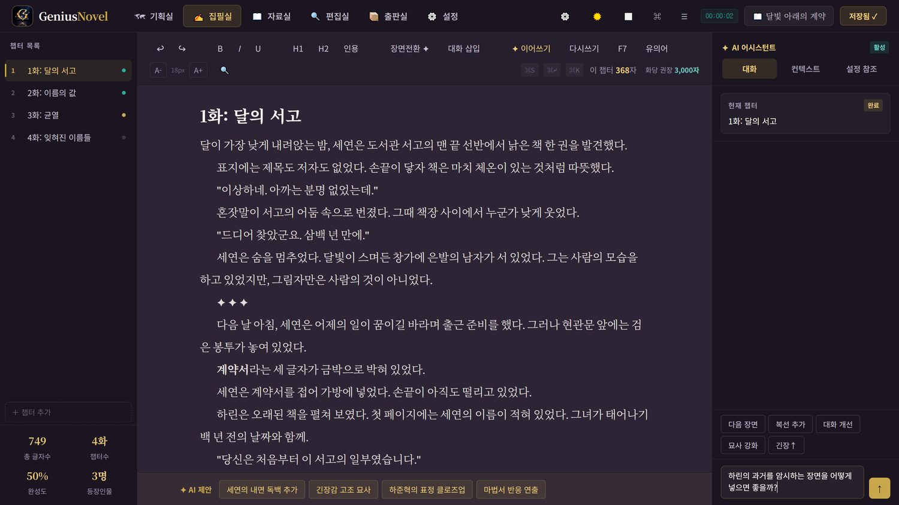
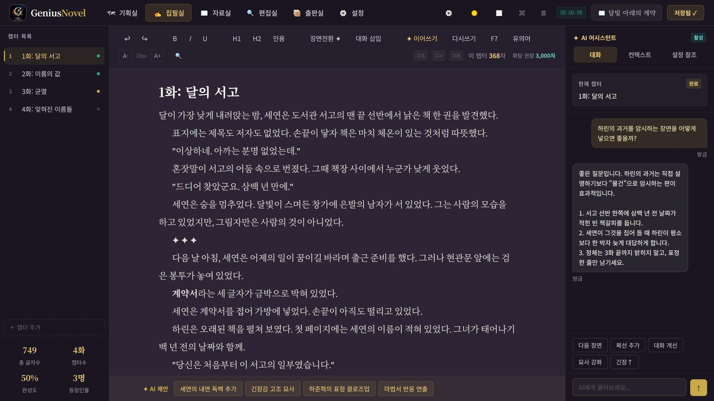
입력칸 위의 빠른 질문 단추는 다음 장면, 복선 추가, 대화 개선, 묘사 강화, 긴장 높이기를 한 번에 요청합니다.
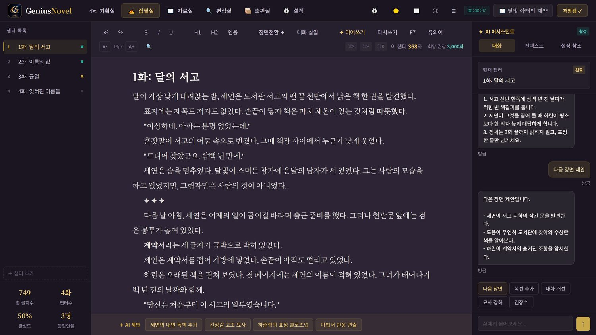
컨텍스트 탭에는 AI가 지금 참고하는 챕터가 보이고, 설정 참조 탭에는 자료실에 적어 둔 항목이 모입니다.
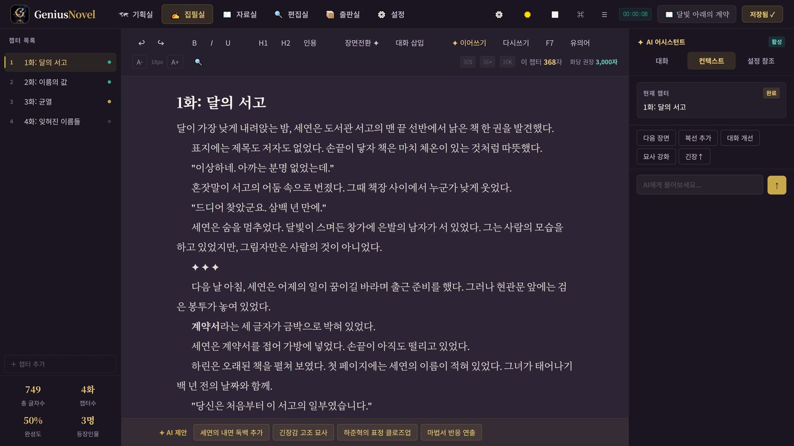
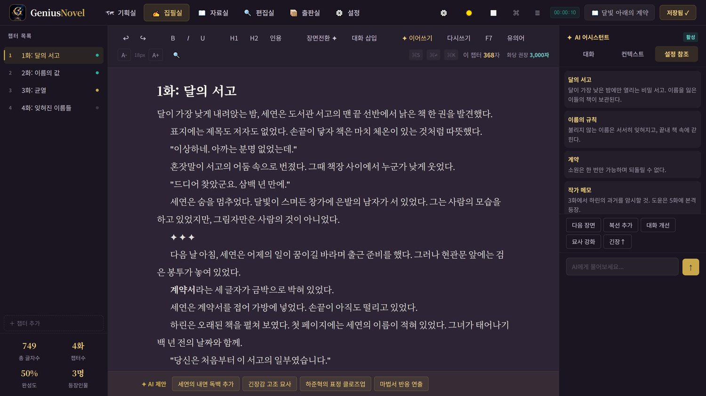
8-2 이어쓰기
도구 줄의 ✦ 이어쓰기를 누르거나 Ctrl+Enter를 누르면, AI가 지금까지의 글에 이어지는 다음 내용을 씁니다. 새로 들어간 부분은 금색 테두리로 표시되어 어디까지가 AI의 글인지 알 수 있고, 마음에 들지 않으면 직접 지우거나 고치면 됩니다. 편집기 아래의 AI 제안 단추를 누르면 그 방향으로 이어서 씁니다.
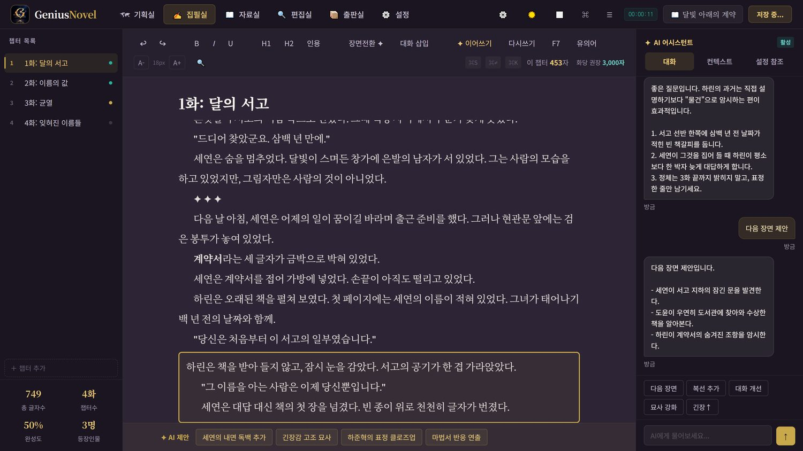
8-3 다시쓰기
다시쓰기는 선택한 문장을 다른 방식으로 고쳐 줍니다. 더 긴박하게, 더 서정적으로, 1인칭으로, 대화 중심으로, 30% 압축, 2배 확장 중에서 고릅니다. 선택한 글이 없으면 현재 챕터의 앞부분을 대상으로 합니다.
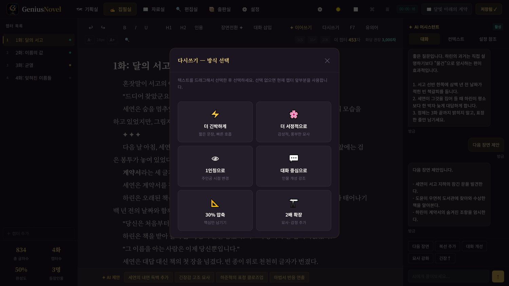
8-4 인라인 도구와 유의어
문장을 드래그해서 선택하면 이런 인라인 AI 도구가 나타납니다. 같은 변환을 바로 실행할 수 있고, 결과는 선택했던 자리에 그대로 반영됩니다.
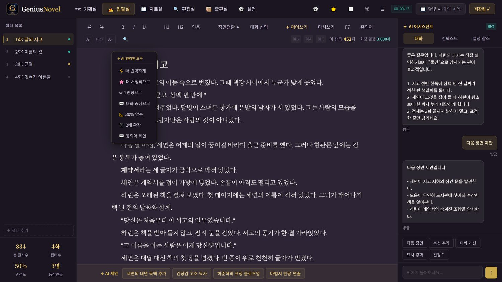
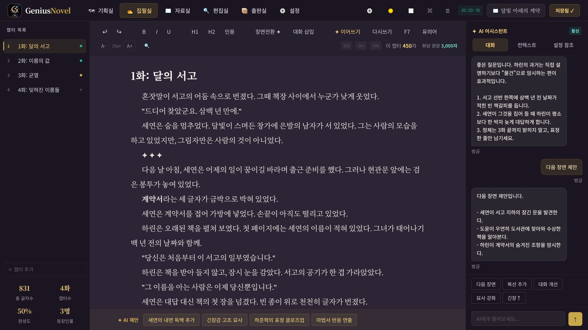
단어 하나를 선택하고 유의어 단추를 누르면 비슷한 말 목록이 나오고, 하나를 누르면 그 자리에서 바뀝니다.
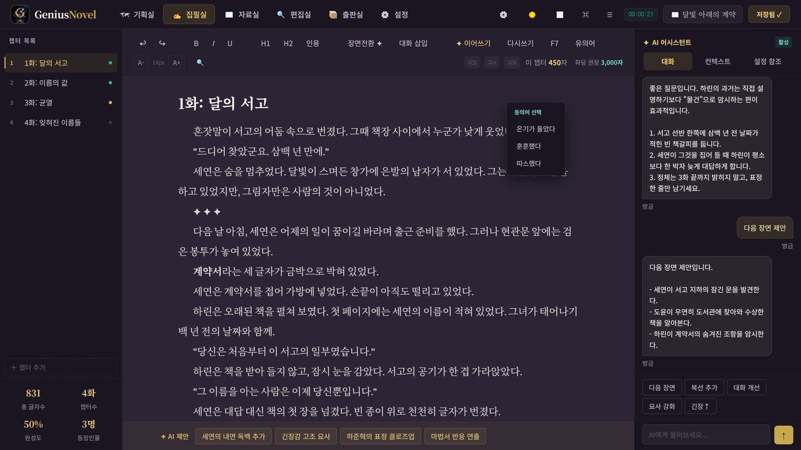
8-5 맞춤법 검사
F7을 누르면 맞춤법 검사가 실행됩니다. 띄어쓰기, 맞춤법, 헷갈리는 말을 찾아 고칠 표현과 이유를 보여 주고, 적용을 누르면 본문에 반영됩니다.
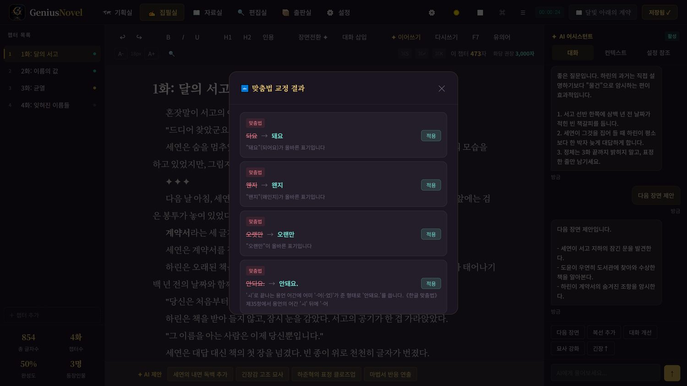
9. 기획실
기획실은 작품의 뼈대를 만드는 곳입니다. 네 칸으로 나뉘어 등장인물, 플롯 트리, 세계관 설정, 연표를 한 화면에서 관리합니다.

9-1 등장인물
인물은 직접 추가할 수 있습니다. 이름과 역할, 설명, 성격 특성, 외모, 그리고 이야기 속에서의 변화까지 적어 둡니다. 여기에 적은 내용은 AI가 글을 쓸 때 설정으로 참고합니다.
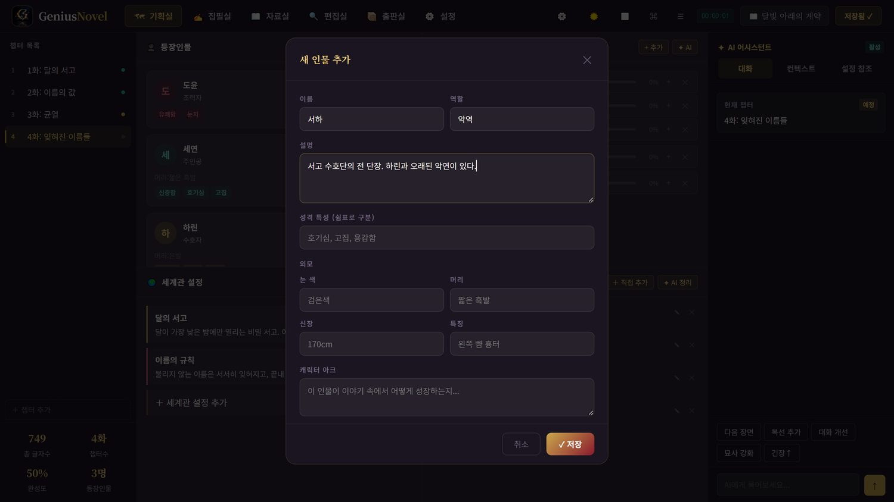
인물 칸의 AI 생성을 누르면 어떤 인물을 만들지 한 줄로 묻습니다. 설명을 입력하면 이름과 성격, 외모가 갖춰진 인물을 만들어 목록에 바로 추가합니다.
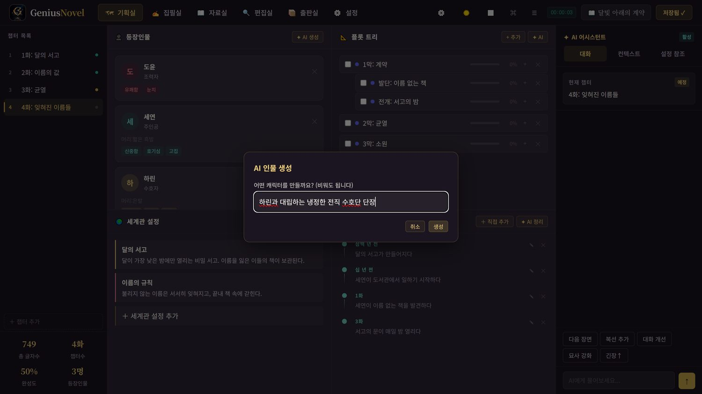
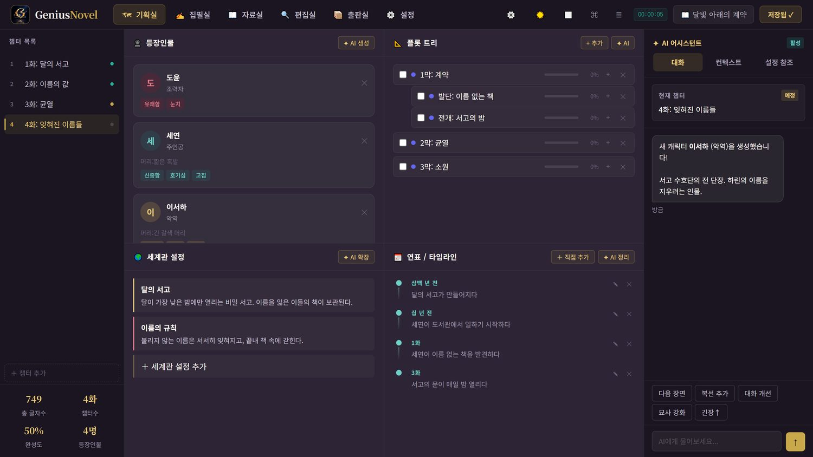
9-2 플롯 트리
플롯 트리는 추가 단추로 막과 장면을 직접 쌓고, 항목을 끌어서 순서를 바꿀 수 있습니다. 하위 항목도 만들 수 있고, 체크 칸으로 끝낸 항목을 표시합니다. AI 단추를 누르면 시놉시스와 분량을 물은 뒤 화별 줄거리를 설계해 주고, 챕터 목록에 추가할지 묻습니다.
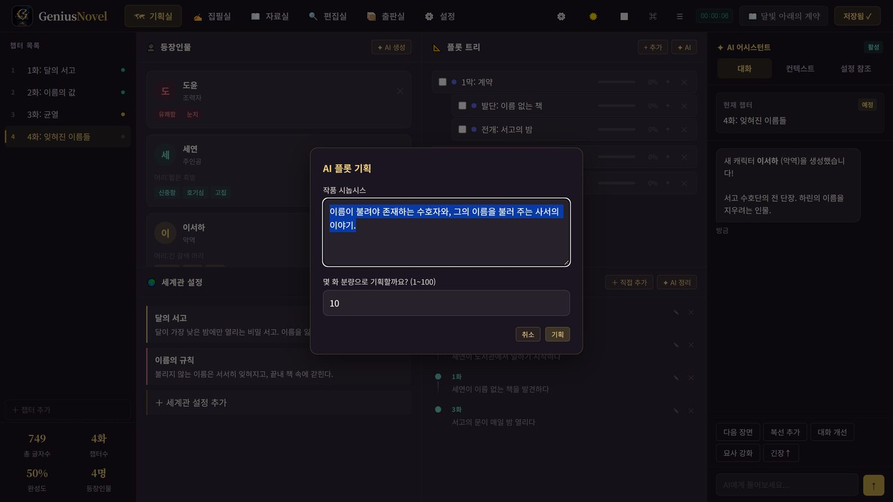
9-3 세계관과 연표
세계관 설정에는 장소와 규칙을 카드로 정리하고, AI 확장으로 설정을 더 늘릴 수 있습니다. 연표에는 시기와 사건을 적어 시간 순서로 정리하고, 사건마다 색을 지정할 수 있습니다.
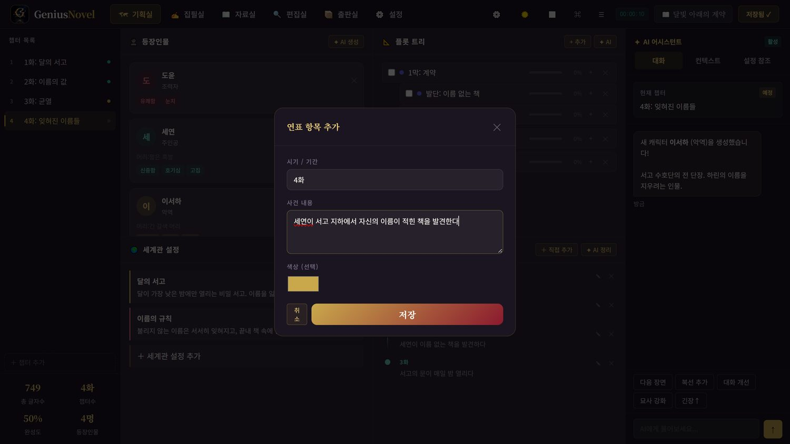
10. 자료실
자료실은 작품의 설정집입니다. 왼쪽 메뉴에서 인물 관계도, 인물 상세, 세계관, 규칙, 마법, 장소, 아이템, 역사, 문화, 용어 사전을 고를 수 있습니다. 인물 관계도는 인물들을 선으로 이어 관계를 한눈에 보여 줍니다.
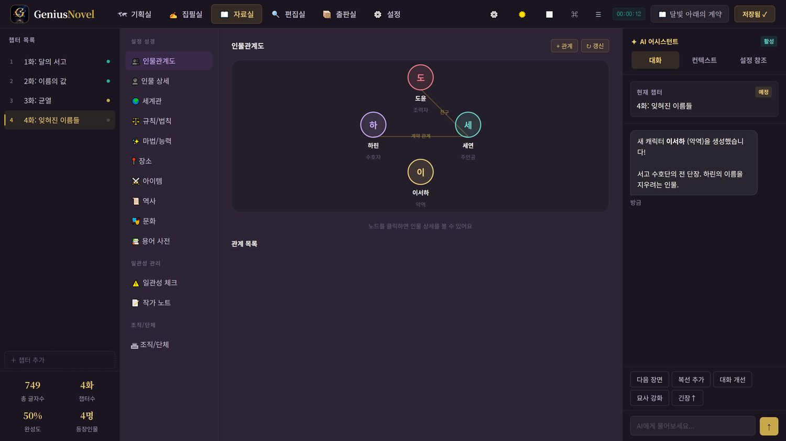
관계 추가를 누르면 출발 인물과 도착 인물, 관계 이름을 정해 관계를 만듭니다. 인물 상세에서는 기획실에서 만든 인물의 설명과 특성을 한곳에서 보고 고칠 수 있습니다.
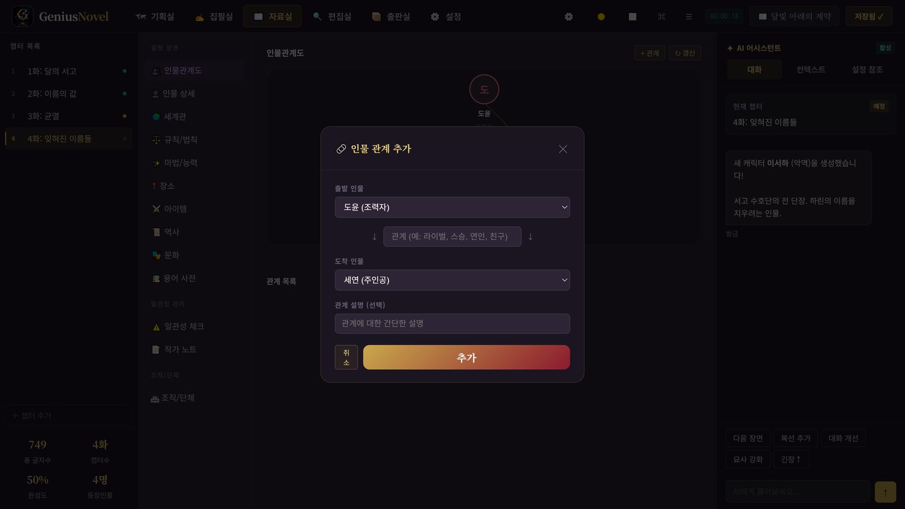
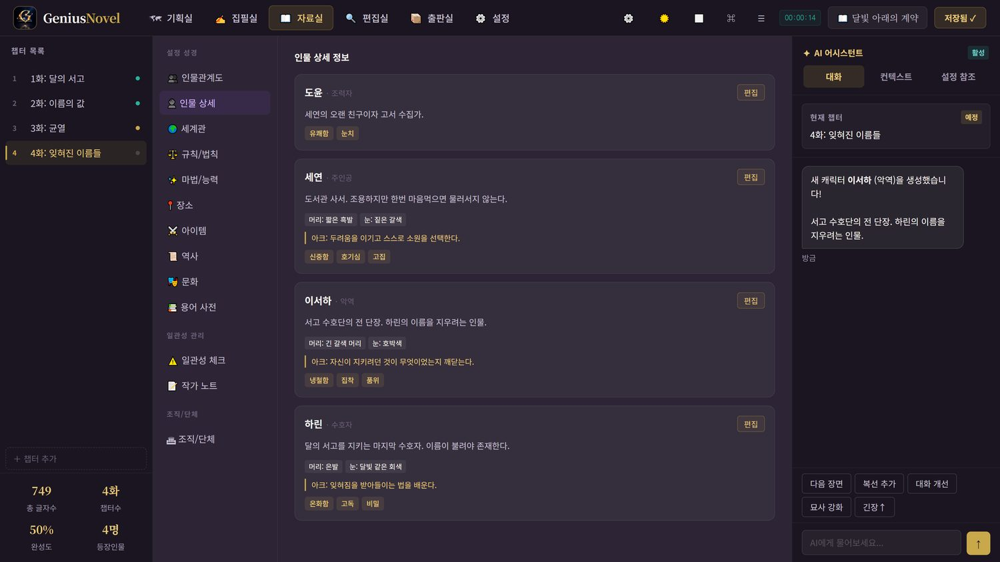
10-1 세계관·규칙·마법·용어 사전
세계관, 규칙, 마법 같은 항목은 제목과 내용을 적어 카드로 쌓습니다. 이렇게 적어 둔 설정은 AI가 글을 쓸 때 참고하고, 일관성 검사에도 쓰입니다. 용어 사전에는 작품 속 고유한 단어를 모아 둡니다.
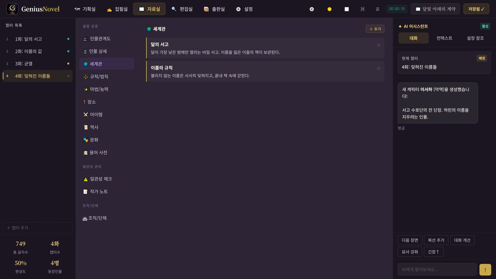
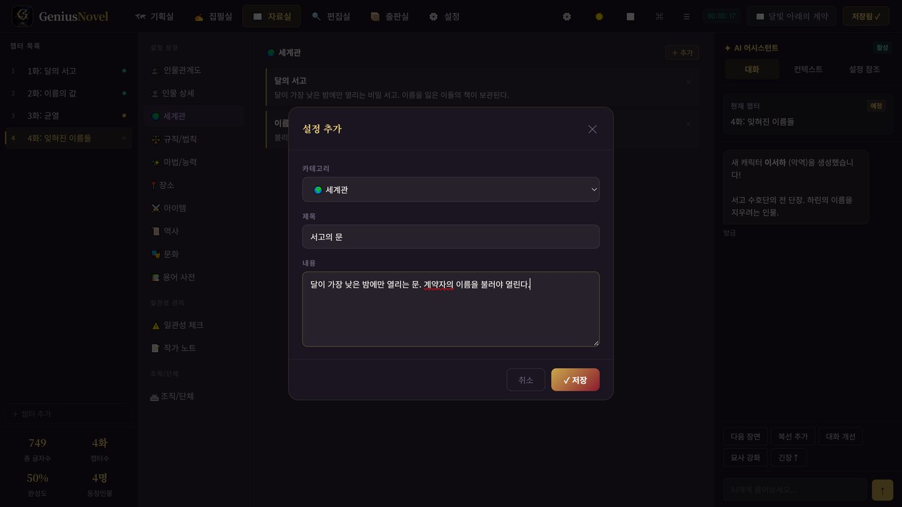
10-2 일관성 체크
일관성 체크는 원고가 설정과 어긋나는지 알려 줍니다. 글을 저장하고 잠시 뒤 AI가 설정과 원고를 비교해 문제를 찾고, 상단 메뉴에 건수가 표시됩니다. 예를 들어 눈동자 색이 설정과 다르게 쓰였다면 이렇게 알려 주고, 확인한 문제는 해결 표시를 누르면 목록에서 사라집니다.
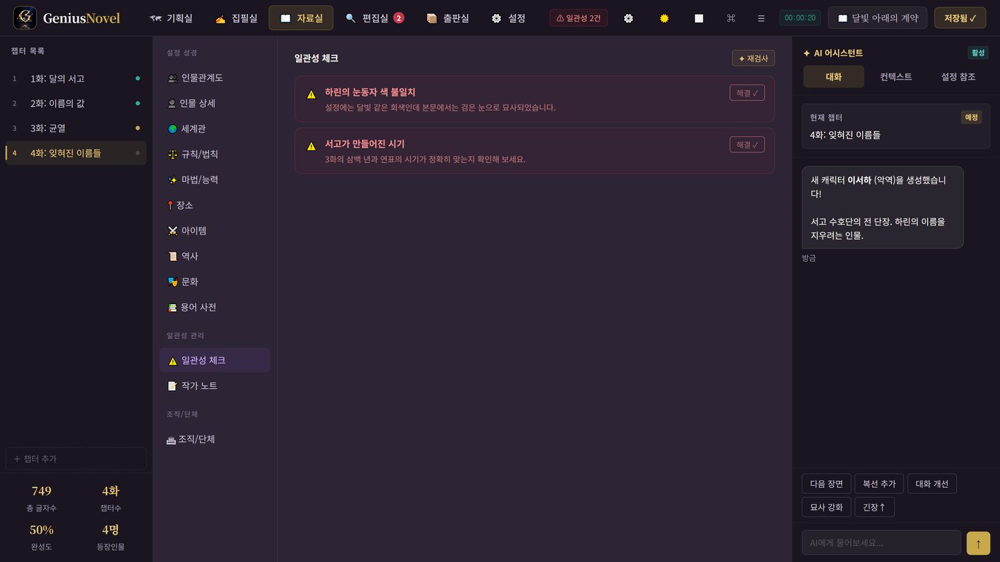
10-3 작가 노트와 조직/단체
작가 노트에는 복선이나 앞으로 쓸 내용 같은 메모를 남깁니다. 조직/단체에서는 단체를 만들고 구성원과 직책을 지정합니다.
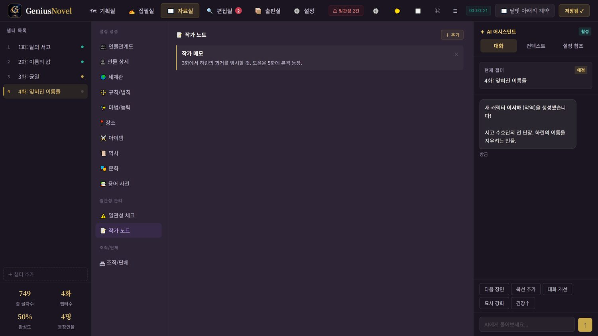
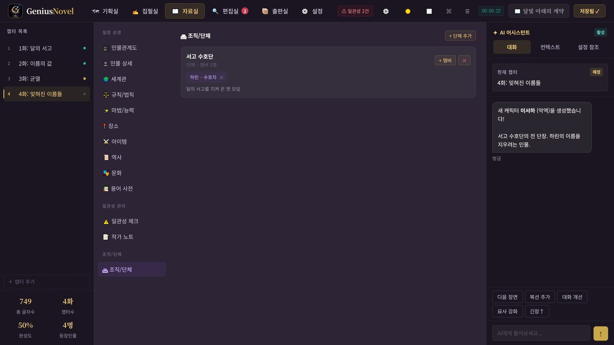
11. 편집실
편집실은 원고를 점검하는 곳입니다. 위쪽 네 단추는 클리셰 탐지, 독자 반응, 문체 분석, 맞춤법 교정입니다. 아래 과용 단어 패널은 집필실에서 쓰는 동안 같은 단어가 다섯 번 이상 반복되면 알려 줍니다.
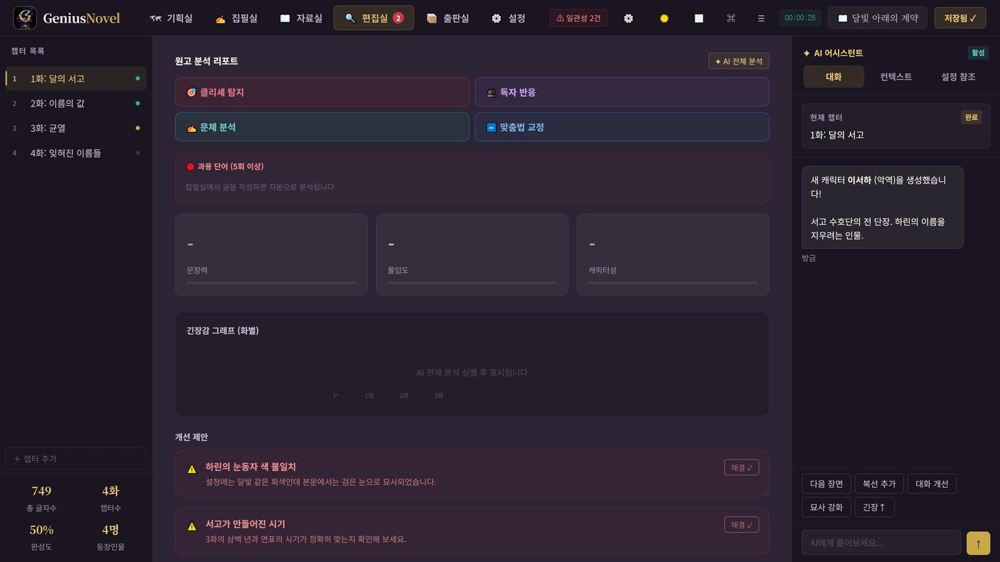
AI 전체 분석을 누르면 문장력, 몰입도, 캐릭터성 점수와 화별 긴장감 그래프, 그리고 개선 제안이 나옵니다. 어느 화가 늘어지는지 한눈에 볼 수 있습니다.
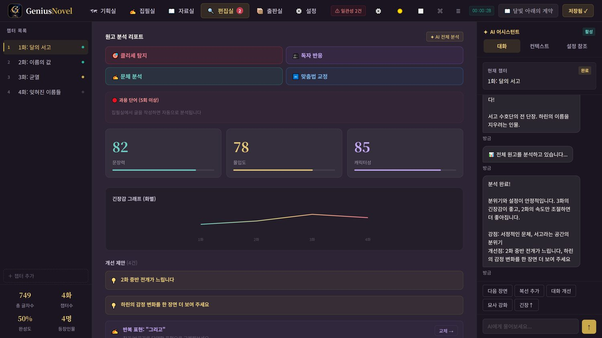
클리셰 탐지는 흔한 표현을 찾아 바꿀 대안을 제안합니다. 독자 반응은 가상의 독자들이 남길 만한 댓글을 보여 주고, 문체 분석은 문장 길이, 대화와 묘사의 비율, 감정 강도 같은 수치를 알려 줍니다.
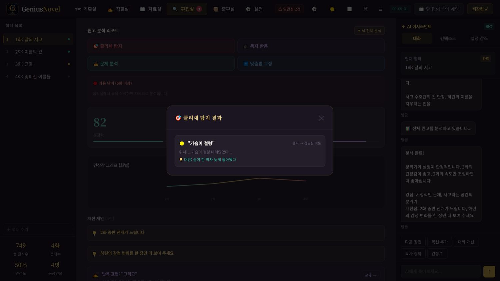
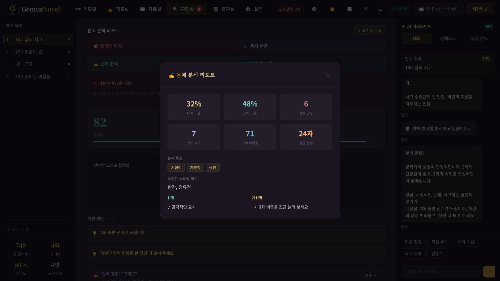
12. 출판실 — 전자책 만들기
출판실에서는 완성한 원고를 전자책 파일로 만듭니다. 맨 위에서 출판 플랫폼을 유페이퍼와 작가와 중에서 고르면, 그 플랫폼 규격에 맞게 항목과 입력 규칙이 달라집니다. 반드시 보완할 항목은 오른쪽 위에 건수로 표시됩니다.
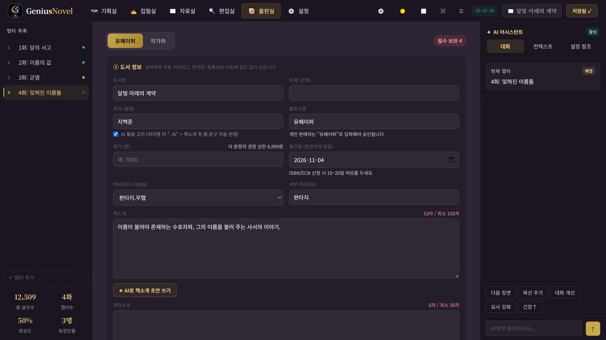
12-1 도서 정보
도서 정보에는 정가, 카테고리, 출판일, 책소개, 저자소개를 적습니다. 책소개와 저자소개는 AI로 초안을 받을 수 있지만, 수상 경력 같은 사실은 직접 적어야 합니다. 글자 수 조건을 못 채우면 칸 옆에 안내가 나옵니다.
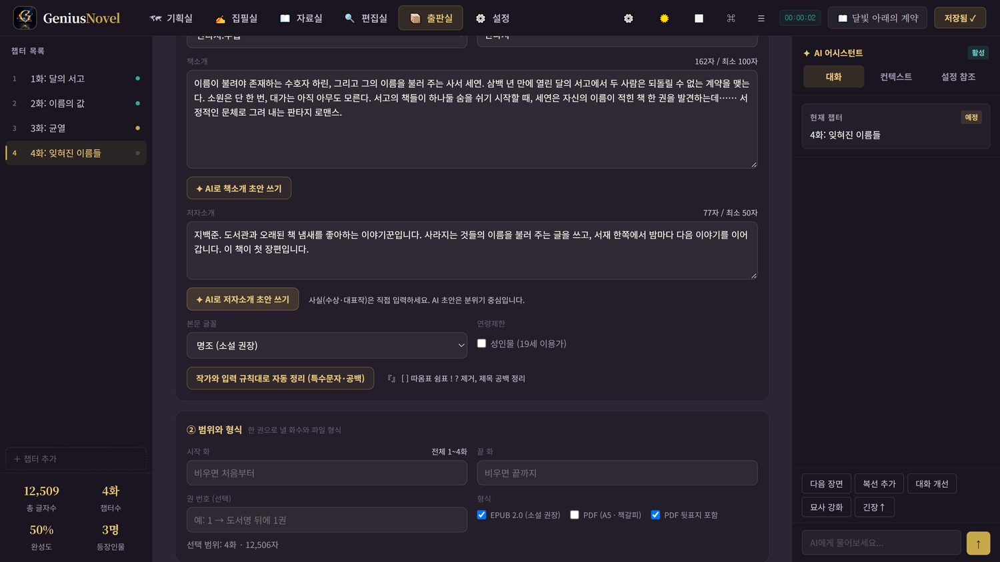
12-2 표지
표지는 스타일과 글자 위치, 그림 요청을 정하고 AI 표지 그림 생성을 누르면 그림 위에 제목과 저자명이 합성됩니다. 마음에 드는 그림이 있으면 내 표지 업로드로 올릴 수도 있습니다. 스타일을 바꾸고 다시 합성을 누르면 글자 모양만 바꿀 수 있습니다.
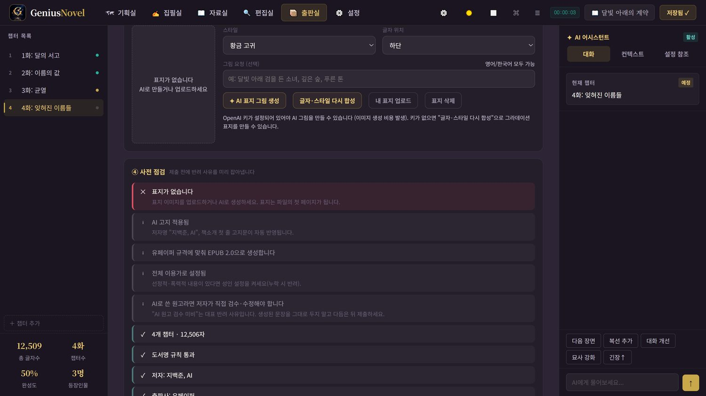
AI 표지 그림 생성은 OpenAI 키가 필요하며 이미지 생성 비용이 발생합니다. 키가 없으면 "글자·스타일 다시 합성"으로 글자만 있는 표지를 만들 수 있습니다.
12-3 사전 점검
사전 점검은 제출하기 전에 반려될 만한 문제를 미리 찾아냅니다. 붉은 항목은 반드시 고쳐야 하고, 초록 표시는 통과입니다. 항목을 모두 통과하면 파일을 만들 준비가 끝납니다.
12-4 출간 파일 만들기
출간 파일 만들기 위에서 EPUB과 PDF 같은 형식을 선택합니다. 단추를 누르면 진행 막대가 차오르며 파일이 만들어지고, 끝나면 이렇게 파일 목록이 나옵니다. 각 파일은 규격 검사를 거쳐 통과 여부가 표시되고, 다운로드를 눌러 저장합니다.
아래 등록정보 시트는 플랫폼 등록 화면에 그대로 붙여 넣을 수 있게 정리한 값입니다. 항목마다 복사 단추가 있습니다.
12-5 작가와 선택 시
작가와를 고르면 작가와의 입력 규칙에 맞게 항목이 바뀌고, 특수문자와 공백을 규칙대로 정리하는 자동 정리 단추가 나타납니다.
각 플랫폼(유페이퍼, 작가와)의 실제 등록 승인 여부는 플랫폼의 심사 기준에 따릅니다. 사전 점검은 반려될 만한 문제를 미리 줄여 주는 용도입니다.
13. 웹소설 연재용 내보내기
웹소설을 연재한다면 출판실 아래의 웹소설 연재용 내보내기를 씁니다. 문피아, 카카오페이지, 네이버 시리즈 중 연재할 곳을 고르면 그 플랫폼의 분량 기준으로 화마다 글자 수를 판정하고, 부족하거나 넘치는 화를 알려 줍니다.
플랫폼별 분량 기준은 공식 규정이 아니라 작가들 사이에서 널리 쓰이는 값입니다. 실제 연재 전에 해당 플랫폼의 안내를 확인하세요.
옵션으로 대사 따옴표, 장면 구분 표기, 문단 사이 빈 줄, 말줄임표 변환을 고릅니다. 표에서 제목 복사와 본문 복사를 누르면 서식 표기가 빠진 순수한 글이 복사되므로, 연재 화면에 그대로 붙여 넣으면 됩니다. 아래 단추로 회차별 텍스트 묶음(ZIP), 전체 한 파일(TXT), 워드(DOCX) 파일도 받을 수 있습니다.
14. 집필 현황과 목표
출판실 맨 아래의 집필 현황을 열면 총 글자 수, 완성률, 예상 읽기 시간, 화당 평균이 나오고, 챕터 상태별 플롯보드와 집필 시간 기록이 보입니다.
목표 설정에서는 시점과 시제, 금지 표현, 문체 가이드, 목표 글자 수와 마감일을 정합니다. 시점·시제·문체 가이드·금지 표현은 AI가 글을 쓸 때도 반드시 지키도록 전달됩니다.
15. 설정과 단축키
설정에서는 AI 프로바이더와 모델, API 키, 창의성 값을 정하고(3장 참고), 편집기 글꼴 크기와 테마를 바꿀 수 있습니다. 설치본에서는 프로그램 정보(버전, 업데이트 확인, 기기 초기화)도 보입니다.
| 단축키 | 기능 |
|---|---|
| Ctrl+S | 저장 |
| Ctrl+Enter | AI 이어쓰기 |
| Ctrl+P | 커맨드 팔레트 |
| Ctrl+F | 찾기 / 바꾸기 |
| F7 | 맞춤법 검사 |
| Ctrl+Shift+F | 포커스 모드 |
| Ctrl+1~6 | 방 전환 |
| Ctrl+G | 전체 검색 |
16. 자주 겪는 문제
| 증상 | 확인할 것 |
|---|---|
| AI가 응답하지 않아요 | 설정에서 프로바이더, 모델, API 키가 맞는지 확인하세요. OpenAI는 크레딧 잔액이 0이 아닌지도 확인하세요. |
| AI 표지 그림이 안 만들어져요 | OpenAI 키가 저장되어 있는지, 크레딧이 남아 있는지 확인하세요. 키가 없으면 "글자·스타일 다시 합성"을 쓰세요. |
| 저장이 되는지 불안해요 | 화면 오른쪽 위에 저장됨 ✓이라고 나오는지 보세요. |
| "다른 PC에서 활성화된 라이선스"라고 나와요 | 이전에 쓰던 컴퓨터에서 설정의 기기 초기화를 한 뒤, 새 컴퓨터에서 다시 활성화하세요. |
| 출판 파일이 만들어지지 않아요 | 출판실의 사전 점검에 남은 붉은 항목을 먼저 해결하세요. |
| TXT 파일을 불러왔는데 화가 나뉘지 않아요 | 파일에 "제1화", "제2화"처럼 화를 구분하는 제목이 있는지 확인하세요. |
위 방법으로 해결되지 않으면 구매처의 고객 지원으로 문의해 주세요.